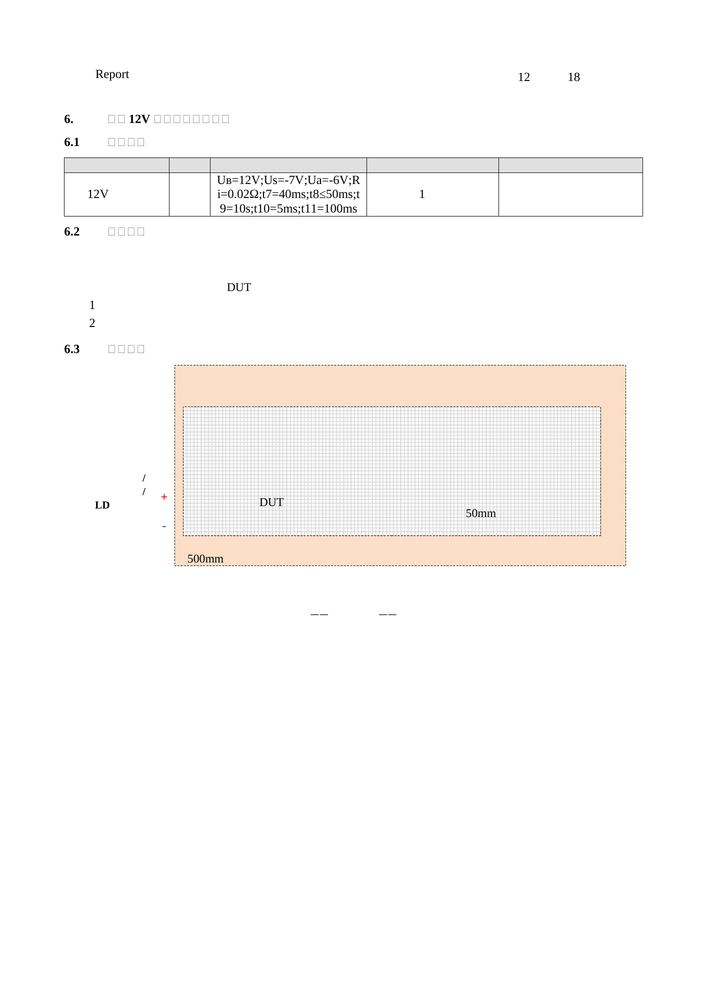

委托单已识别
项目范围、样品主体、委托编号
EMC测试申请表E202508277046.xls委托单位、产品型号、测试范围
✓ 提取完成
4 份必需资料已上传4 份已提取2 项待确认
项目范围、样品主体、委托编号
计划测试项目、要求、标准引用
逐成员测试表、仪器、校准和结果
报告结果、页眉编号、签署信息和结论
| 资料类型 | 当前文件 | 内容识别 | 下一步 |
|---|---|---|---|
| 原始记录 | test_set_04-rd20-original-records.zip | 2 个成员需确认身份 | |
| 检测报告 | 报告书_E202508277046-1EN(RD20).docx | 发现结果矛盾 |
共 68 个字段67 已确认1 待处理

2 个标准已选1 个引用待处理
EMC · 2026 新能源
锁定后文件版本、项目组和标准范围组成不可变快照；替换文件请创建修订版本。
审核版本 V14 份资料2 个标准
当前 V3共 3 个版本
20 个成员2 个需确认
| 成员 | 文件 / 页数 | PDF 内测试项 | 样品 / 模式 | 状态 | 操作 |
|---|---|---|---|---|---|
| member-19ZIP 第 19 个 | 反向电压_0016_Mode2.pdf第 1 页 | 反向电压表格字段匹配 | E202508277046-0016Mode 2 | 已解析 | |
| member-20ZIP 第 20 个 | 反向电压_0016_Mode2_repeat.pdf第 1 页 | 反向电压与 member-19 同名测试项 | E202508277046-0016Mode 2 | 重复候选 | |
| member-07ZIP 第 7 个 | temperature_test.pdf第 4 页 | 高温存储测试项身份待确认 | E202508277046-0014模式未识别 | 需确认 |